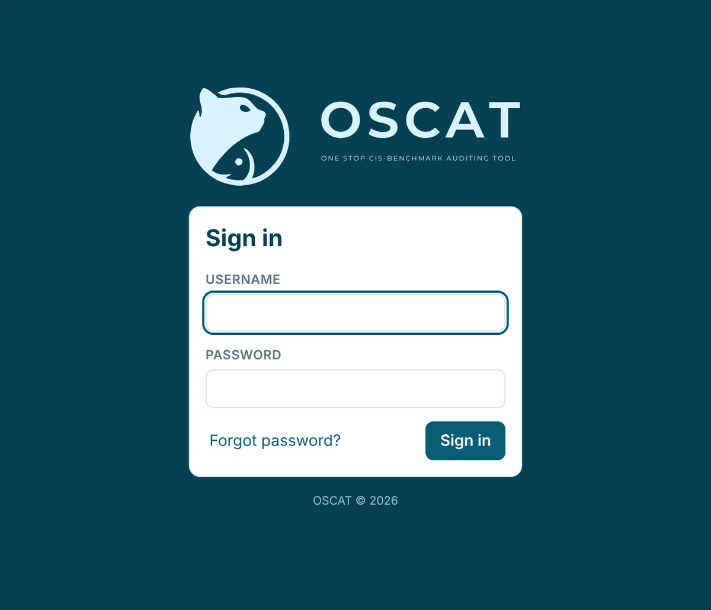
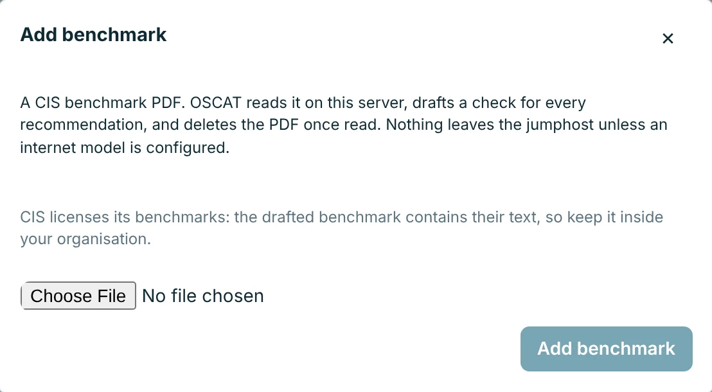
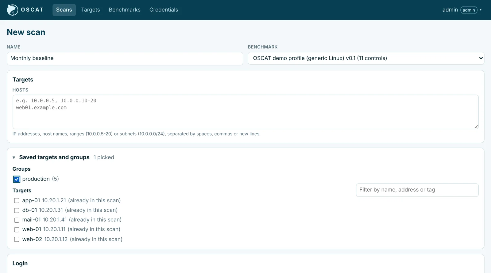
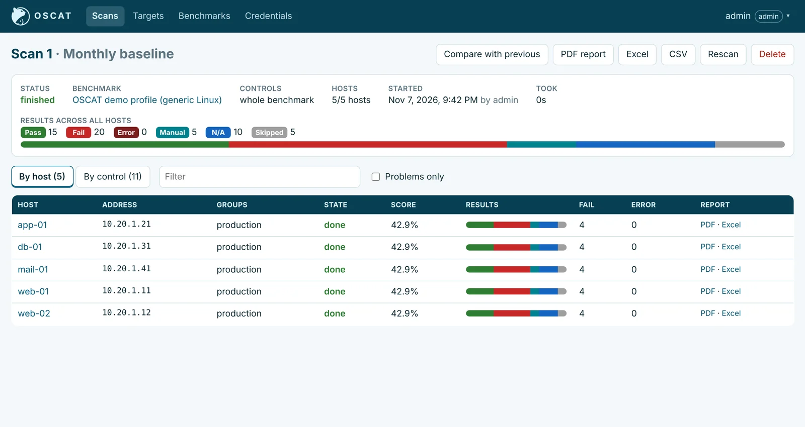
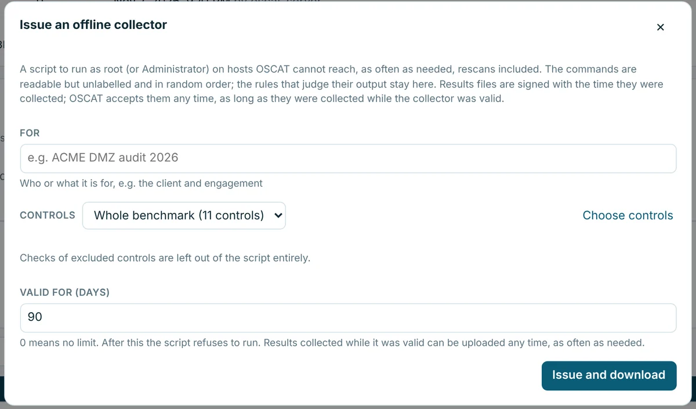
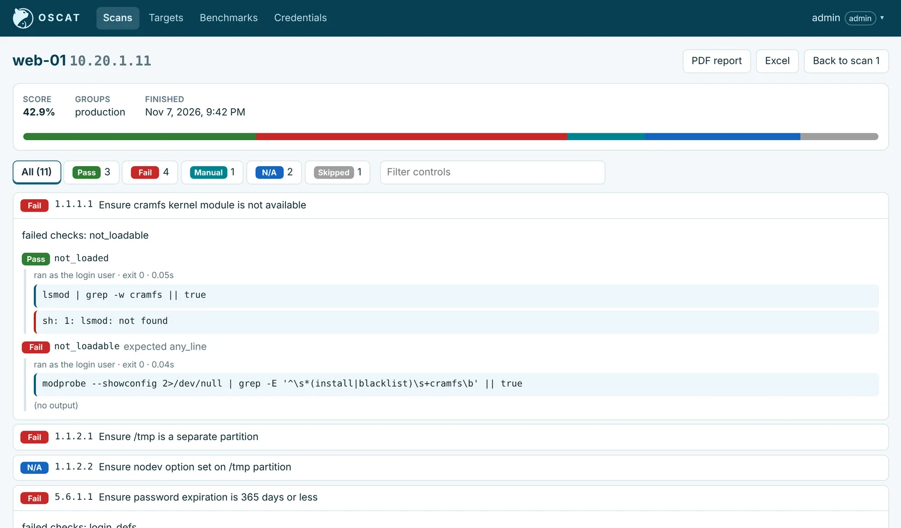
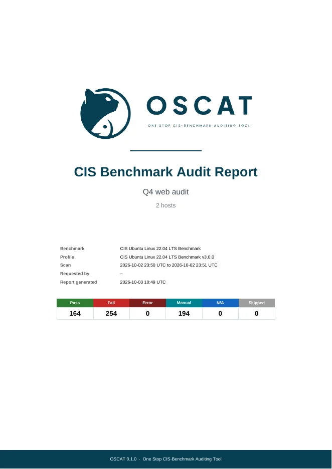
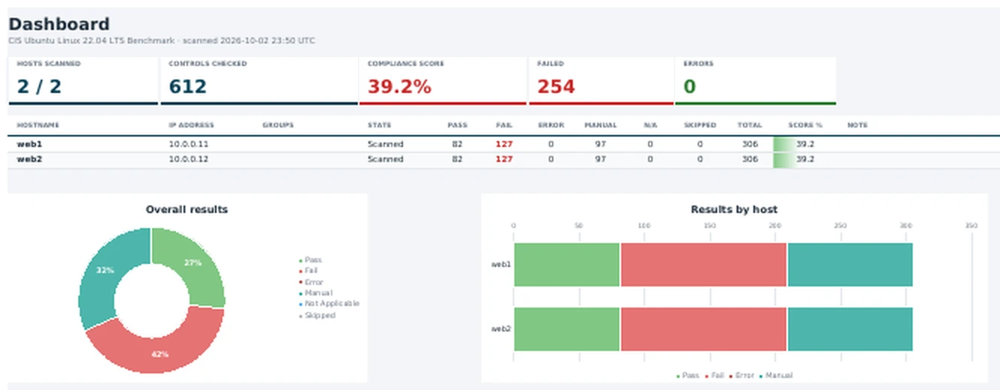
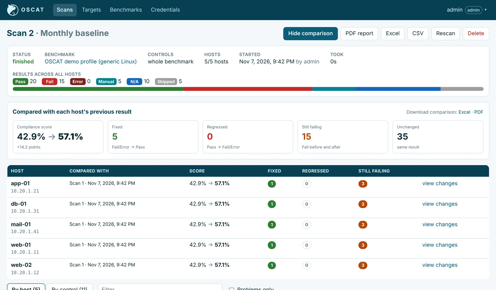

What makes OSCAT different
Things most compliance scanners can't do
Import directly from the CIS benchmark PDF
Upload any CIS benchmark PDF and scan right away. When CIS releases a new version, you import it yourself the same day.
Customizable controls
Change parameters and pass rules, add your own controls, combine controls from other benchmarks, and pick exactly which controls to run.
CIS PDF to Excel working paper
Download any benchmark or control set as an Excel working paper for manual audits.
Offline collector
Hand a readable script to hosts OSCAT can't reach, then upload the results to any OSCAT install.
Audit network devices offline
Can't log in to a router, switch or firewall? Upload its running config or a saved terminal session and OSCAT audits it.
Evidence behind every finding
The exact command, its raw output and the actual setting, so every result can be defended.
Reach hosts behind an SSH bastion
Scan servers in isolated zones through a bastion host, with nothing to set up on the targets.
Scan comparison
Compare a rescan with the last audit: what was fixed, what regressed and what is still failing.
Every result explained
No unexplained N/A or skipped controls. Each one states why, and which control it depends on.
Controls that follow the benchmark
Several checks per control with AND/OR logic, and dependencies between controls.
Get your CIS benchmark
Download the CIS benchmark PDF for the platform you audit from downloads.cisecurity.org.
Bring any version you need, including the latest.
Install and sign in
Install OSCAT on your own laptop or a jumphost, Windows or Linux, with no internet needed, or pick the portable version that installs nothing. Then open it in your browser.
Nothing is installed on the hosts you audit.

Upload the PDF, scan straight away
You can upload the CIS benchmark PDF directly to OSCAT. It analyses every control and drafts its check and pass/fail rule from your benchmark, so you can scan straight away.
You can also download it as an Excel working paper for manual audits.

Choose controls, targets and credential
Pick which controls to run, modify them, or even combine them with controls from other benchmarks as you need. Then type the target hosts or pick saved groups, and choose one credential with its privilege escalation.
SSH, WinRM, database and device CLI, with sudo, su, pbrun and more, through an SSH bastion if needed.

Scan, even hosts you can't reach
Start the scan and follow every host live.
Can't reach a host? Issue an offline collector: an audit script file (.sh for Linux, .ps1 for Windows) that only reads settings and changes nothing. Run it on the host, then upload the results file it produces. Those hosts join the same results.


Review the evidence
See results by host or by control. Every finding shows the exact command, its output and the actual setting.
N/A and skipped controls always say why.

Download the report
Excel, PDF and CSV for the whole scan or one host, with a cover page, a dashboard and an observation for every control.
Ready to hand to your client.


Rescan and compare
After remediation, rescan in one click. OSCAT compares each host with its last audit: what was fixed, what regressed and what is still failing.
Download OSCAT
Everything an audit needs
From the first scan to the client report
Agentless scanning
Log in over SSH, WinRM, database or device CLI. Nothing is installed on audited hosts.
Saved control sets
Save named choices of controls per benchmark and reuse them for scans and collectors.
Web app and command line
Run scans from the browser, or script them with the oscat command line.
Privilege escalation
sudo, su, dzdo, doas, pbrun, pmrun and network enable mode.
Grouped multi-host scans
Scan tens to hundreds of hosts, follow them live, cancel or rescan in one click.
Client-ready reports
Excel, PDF and CSV for the whole scan or one host, with a cover page and dashboard.
Supported platforms
Import the CIS benchmarks you need
Get OSCAT
Installers for Windows Server, RHEL and SUSE (RPM), Ubuntu and Debian (DEB) and Docker, plus portable Windows and Linux builds that install nothing. Every download works without internet access.